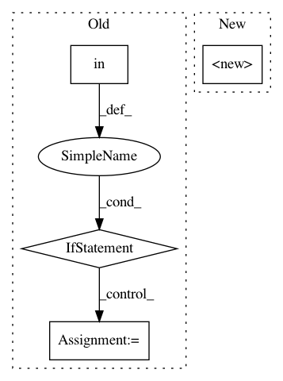

ef7964296ee8d5025dbdf7ca02eddd72a8b9df56,src/python/pants/backend/codegen/protobuf/protoc.py,Protoc,generate_url,#Protoc#,39
Before Change
def generate_url(self, plat: Platform) -> str:
version = self.get_options().version
if version in {"2.4.1", "2.5.0", "2.6.1"}:
// Very old versions of protoc don"t have binaries available in their github releases.
// So for now we rely on the pants-hosted binaries.
// TODO: Get rid of or update our tests that rely on this very old version.
// Then we can consider whether to stop supporting it.
if plat == Platform.darwin:
plat_str = "mac/10.13"
elif plat == Platform.linux:
plat_str = "linux/x86_64"
else:
raise ExternalToolError()
return f"https://binaries.pantsbuild.org/bin/protoc/{plat_str}/{version}/protoc"
if plat == Platform.darwin:
plat_str = "osx"
elif plat == Platform.linux:
plat_str = "linux"
After Change
def generate_url(self, plat: Platform) -> str:
version = self.options.version
plat_str = match(plat, {Platform.darwin: "osx", Platform.linux: "linux"})
return (
f"https://github.com/protocolbuffers/protobuf/releases/download/"
f"v{version}/protoc-{version}-{plat_str}-x86_64.zip"
In pattern: SUPERPATTERN
Frequency: 3
Non-data size: 4
Instances
Project Name: pantsbuild/pants
Commit Name: ef7964296ee8d5025dbdf7ca02eddd72a8b9df56
Time: 2020-07-23
Author: 14852634+Eric-Arellano@users.noreply.github.com
File Name: src/python/pants/backend/codegen/protobuf/protoc.py
Class Name: Protoc
Method Name: generate_url
Project Name: kkroening/ffmpeg-python
Commit Name: 57abf6e86edbf1d9ff1448302d4c8bf970092a03
Time: 2018-03-11
Author: karlk@kralnet.us
File Name: ffmpeg/nodes.py
Class Name: Node
Method Name: __init__
Project Name: scikit-multiflow/scikit-multiflow
Commit Name: ad3a9037dca6ed52359d861575095d01f428d53d
Time: 2020-06-16
Author: 17923265+jacobmontiel@users.noreply.github.com
File Name: setup.py
Class Name:
Method Name: setup_package